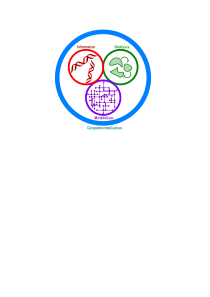

Powner Lab

The Powner Group's research interests center around the chemistry associated with the origin of life. We use organic chemistry to try to understand the transition between non-life and life that occurred ~ 4 billion years ago.
Our experiments are directed toward understanding the emergence of the nucleic acids, peptides, lipids and core components of the central metabolism used by life. Overlaid on this, we investigate the mechanisms by which information transfer, catalysis and self-assembly can emerge in networks of these molecules.
We have made contributions in the areas of nucleic acid, amino acid and amino nitrile chemistry, protometabolic networks, catalysis, ribozymes, lipids, crystal engineering, green chemistry and photochemistry.
Our experiments are directed toward understanding the emergence of the nucleic acids, peptides, lipids and core components of the central metabolism used by life. Overlaid on this, we investigate the mechanisms by which information transfer, catalysis and self-assembly can emerge in networks of these molecules.
We have made contributions in the areas of nucleic acid, amino acid and amino nitrile chemistry, protometabolic networks, catalysis, ribozymes, lipids, crystal engineering, green chemistry and photochemistry.


Representative publications:
- Synthesis of activated pyrimidine ribonucleotides in prebiotically plausible conditions. Powner, M. W.; Gerland, B. and Sutherland, J. D. Nature. 2009.
- Selective prebiotic conversion of pyrimidine and purine anhydronucleosides into Watson-Crick base-pairing arabino-furanosyl nucleosides in water. Roberts, S. J.; Szabla, R.; Todd, Z. R.; Stairs, S.; Bučar, D. K.; Šponer, J.; Sasselov. D. D. and Powner, M. W. Nat. Commun. 2018.
- Divergent prebiotic synthesis of pyrimidine and 8-oxo-purine ribonucleotides. Stairs, S.; Nikmal, A.; Bučar, D. K.; Zheng, S. L.; Szostak, J. W. and Powner, M. W. Nat. Commun. 2017.
Representative publications:
- Prebiotic Synthesis of Cysteine Peptides That Catalyze Peptide Ligation in Neutral Water. Foden, C.; Islam, S.; Garcia, C. A. F.; Maugeri, L.; Sheppard, T. and Powner, M. W. ChemRxiv. Preprint. 2020.
- Peptide ligation by chemoselective aminonitrile coupling in water. Canavelli, P.; Islam, S. and Powner, M. W. Nature. 2019.
- Prebiotic selection and assembly of proteinogenic amino acids and natural nucleotides from complex mixtures. Islam, S.; Bučar, D. K. and Powner, M. W. Nat. Chem. 2019.